Data publicării: 13.08.2018
Autor articol: Mircea Vaida
1. Securitatea Aplicaţiei MBTI-Enneagrama
Principalele tipuri de probleme de securitate care trebuie rezolvate în cadrul aplicaţiei web sunt următoarele:
1. Securitatea datelor utilizator, ce presupune ca datele principale pentru fiecare utilizator să fie unice
2. Prevenirea accesului neautorizat la paginile intermediare ale aplicaţiei
3. Autentificare în timpul sesiunii curente. Studenţii nu ar trebui să aibă acces la paginile portalului de profesori, şi profesorul nu poate avea acces direct la portalul studenţilor (deşi poate manipula datele studenţilor prin intermediul portalului profesor)
1.1 Securitatea datelor utilizator
Securitatea datelor utilizator presupune prevenirea accesului neautorizat la aplicaţie şi ca datele tip nume utilizator, parolă, să fie unice. Securitatea datelor utilizator se va realiza prin intermediul login.php, inscriere.php şi insert.php. După cum am amintit anterior, inscriere.php este singurul punct al aplicaţiei în care se înserează date în baza de date. Dacă toate excepţiile sunt tratate în cadrul acestei pagini, posibilitatea de a avea date greşite sau date duplicate în cadrul bazei de date se va reduce semnificativ.
Login.php va trebui să verifice:
1. Dacă utilizatorul şi parola sunt corecte.
2. Dacă utilizatorul şi parola sunt corecte trebuie să stabilească sesiunea curentă
3. După stabilirea sesiunii curente trebuie să îndrumeze utilizatorul spre portalul potrivit
La introducerea unui nume utilizator sau a unei parole greşite, aplicaţia va afişa mesajul corespunzător, redirecţionând utilizatorul înapoi la pagina index.php (Figura 1).
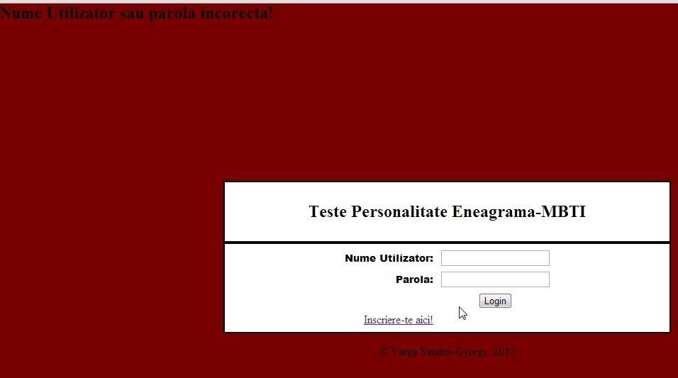
Ceea ce se va verifica în continuare din parametri stabiliţi de login.php este cheia de sesiune, pentru a preveni accesul neautorizat la paginile intermediare ale aplicaţiei.
Pagina de însciere, Inscriere.php este un formular simplu, care la apăsarea butonului de înscriere va apela pagina insert.php care, înainte sa însereze un utilizator nou, va verifica dacă toate datele necesare pentru ontologie sunt introduse sau numele de utilizator şi parola nu au fost introduse prealabil în sistem.
Figurile 2 şi 3 exemplifică mesajele de securitate returnate de insert.php. Lista mesajelor se mai poate extinde dacă se adaugă verificări pe adresa e-mail sau alte criterii legate de parolă. După ce utilizatorul este adăugat cu succes bazei de date, aplicaţia va afişa un mesaj de success, Figura 4 şi va redirecţiona utilizatorul către pagina de login.
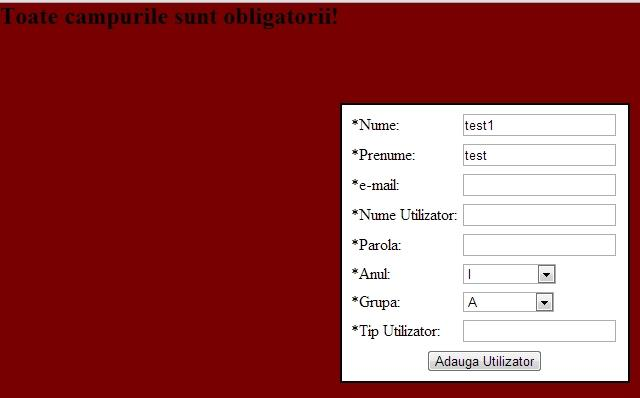
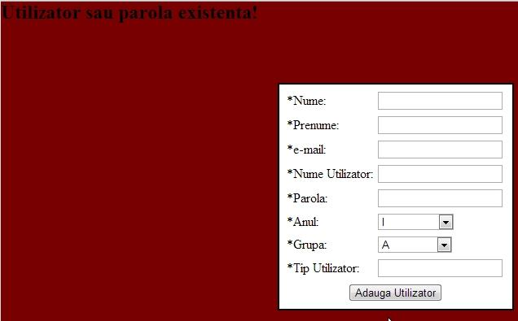
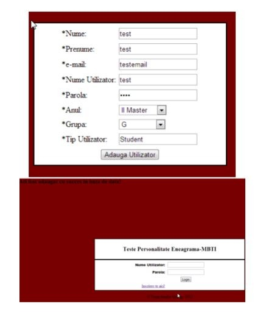
1.2 Prevenirea accesului neautorizat la pagini
Prevenirea accesului neautorizat la pagini se va realiza printr-un mecanism de autentificare inclus în cadrul paginilor. Acest mecanism de autentificare va verifica indicatorul de sesiune curentă cu indicatorul de sesiune memorat din login.php. Prin această verificare se va evita ca persoanele nelogate să poată accesa paginile intermediare dacă introduc direct url-ul paginii.
Acest lucru funcţionează corect dacă persoana respectivă nu e logată, însă studentul logat va putea accesa în continuare portalul de profesor. Pentru a evita acest lucru, în afară de sessionkey se va mai verifica şi tipul utilizatorului.
Exemplu:
– Dacă studentul vrea să acceseze pagina profesorului, va primi un mesaj de eroare (Figura 5)
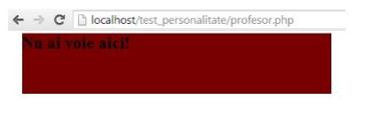
Capitolul următor va prezenta testarea aplicaţiei web şi interpretarea rezutatelor obţinute prin testare.
2. Rezultate experimentale
2.1 Datele de testare introduse în baza de date
Pentru o testare suficientă a aplicaţiei Teste Personalitate Eneagramă – MBTI au fost introduse în baza de date trei grupe complete de studenţi şi a fost creat un cont de tip Profesor, prin intermediul căruia se vor realiza grupările prin toate opţiunile posibile de numar de studenţi intr-o echipă.
Eneatipurile şi tipurile MBTI asociate studenţilor sunt aleatoare, ceea ce înseamnă ca într- o situaţie reală, unde probabilitatea ca eneatipul utilizatorului sa se poate mapa cu tipul lui MBTI este destul de ridicată, se poate aştepta la rezultate mai bune şi o eficienţă mai ridicată, ceea ce înseamnă că rezultatele de test ce urmează a fi prezentate sunt de tip „worst case scenario”.
Datele introduse în sistem sunt prezentate în tabelele următoare:
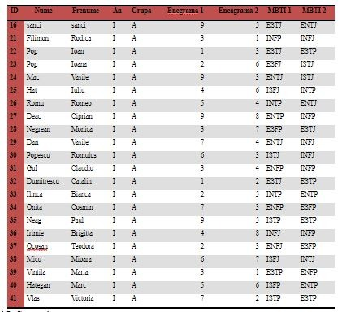
Anul I, Grupa A are 22 de studenţi. Dacă echipele sunt create cu câte trei persoane pe echipă, se aşteaptă la 7 echipe, dintre care 6 echipe vor avea câte trei persoane, iar a şaptea echipă va conţine patru persoane. Dacă echipele sunt grupate cu câte patru persoane pe echipă se aşteaptă la 5 echipe, dintre care ultimele două echipe vor conţine câte 5 persoane, iar dacă echipele sunt create cu câte 5 persoane pe echipă se aşteaptă la 4 echipe, din care ultimele două echipe vor conţine câte câte 6 persoane.
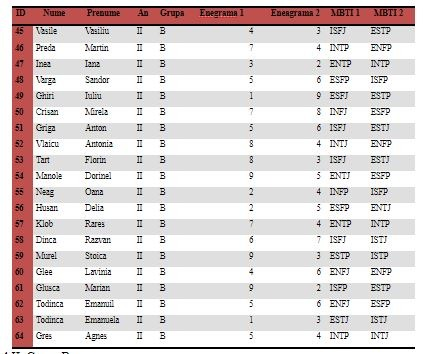
Anul II, Grupa B are 20 de studenţi. Dacă echipele sunt create cu câte trei persoane pe echipă, se aşteaptă la 7 echipe, dintre care 6 echipe vor avea câte trei persoane, iar a şaptea echipă va conţine 2 persoane. Dacă echipele sunt grupate cu câte patru persoane pe echipă se aşteaptă la 5 echipe, iar dacă echipele sunt create cu câte 5 persoane pe echipă se aşteaptă la 4 echipe.
Anul III, Grupa C are 24 de studenţi. Dacă echipele sunt create cu câte trei persoane pe echipă, se aşteaptă la 8 echipe, Dacă echipele sunt grupate cu câte patru persoane pe echipă se aşteaptă la 6 echipe, iar dacă echipele sunt create cu câte 5 persoane pe echipă se aşteaptă la 5 echipe, dintre care primele 4 echipe vor conţine câte 5 studenţi pe echipă, în timp ce a cincea echipă va conţine 4 persoane.
Pe toate cele trei tabele prezentate se poate observa cu uşurinţă aspectul aleator al tipologiilor introduse. Verificarea rezultatelor va consta din două etape:
- Etapa 1: verificarea numărului de echipe create, şi dacă se respectă criteriul deciziei asupra numărului de studenţi din echipe. Această etapă validează constrângerile algritmului privitoare la o singură echipă
- Etapa 2: Calculul eficienţei generale a algoritmului footprints, pe baza celor nouă situaţii testate pe cele trei grupe de studenţi. În principiu se doreşte ca eficienţa generală a algoritmului să fie mai mare sau egal cu 85%, astfel încât algoritmul să se poata încadra în şirul algoritmilor performanţi.
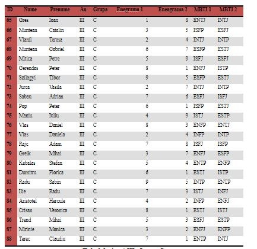
2.2 Interpretarea rezultatelor obţinute
După cum s-a amintit anterior, rezultatele obţinute vor fi evauate în două etape:
Etapa I:
Pe baza celor specificate anterior, aşteptările asupra numărului de echipe şi asupra numărului de studenţi pe echipă sunt următoarele:
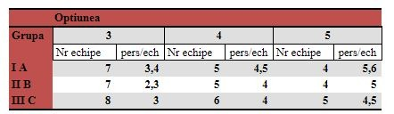
Tabel 5. prezintă fluxul rezultatelor obţinute după ce echipele au fost generate pentru fiecare grupă, prin toate numerele posibile de studenţi pe echipe. În această etapă se vizează validarea numărului total de grupe şi numărul total de studenţi pe grupă.
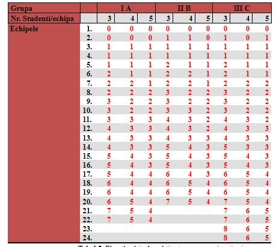
Analizând rezultatele obţinute, se poate constata că numărul echipelor întotdeauna coincide cu numărul la care se aşteaptă utilizatorul, iar după o analiză mai amplă se poate constata că numărul studenţilor alocati pe echipă diferă de numărul dorit doar în cazul în care echipa respectivă este incompletă din cauza incertitudinilor din grupă.
Etapa II:
În această etapă se va efectua analiza rezultatelor obţinute în vederea calculului eficienţei algoritmului propus. Înainte de a trece la calculul eficienţei trebuie menţionate următoarele presupuneri:
- Cu cât numărul de studenţi într-o grupă este mai mică, o incertitudine va cauza o scădere mai semnificativă în ceea ce se priveşte eficienţa algoritmului
- Cu cât numărul de studenţi într-o grupă este mai mare, numărul posibil de incertitudini în grupă creşte
- Într-un mod ideal, se doreşte ca eficienţa algoritmului să fie relativ constantă pe o gamă largă de valori posibile, în ceea ce se priveşte numărul de studenţi într-o grupă Pentru calculul eficienţei a fost realizată statistica prezentată in Tabel 6:
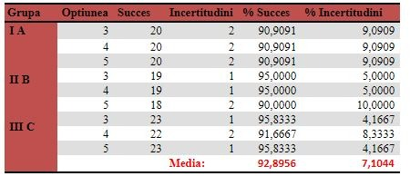
Rezultatele obţinute prin acest algoritm sunt de sine stătătoare. Din rezultatele obţinute reiese ca eficienţa medie pe grupă a acestei soluţii variază în intervalul [90 – 95 %], iar eficienţa generală este aproximativ 93%.
După cum reiese din rezultatele obţinute, un alt aspect pozitiv al algoritmului este ca nu este puternic influenţat de cauzele de incertitudine peste care utilizatorul nu poate avea control, cum ar fi numărul redus sau ridicat de studenţi într-o grupă, sau aspectul aleator al tipologiilor de personalitate rezultate din test.
Pentru că eficienţa generală al algoritmului depăşeşte pragul de 85%, algoritmul se califică printre algoritmii de performanţă ridicată.
Capitolul următor va prezinta un şir de concluzii pe baza informaţiilor teoretice, tehnice şi experimentale prezentate în cadrul acestor rapoarte dedicate utilizarii testelor de personalitate MBTI si Enneagrama si a unei aplicatii practice dedicate.
Concluzii
E-learning este un concept relativ nou în invăţământ. Se poate desfăşura individual, dar în principiu se desfăşoară pe echipe. Conform [1], în evoluţia învăţământului se pot distinge patru stagii semnificative:
- Învăţământul tradiţional
- Învăţământul cooperativ (aplicat în prezent)
- Învăţământul colaborativ (devine tot mai răspândit)
- e-learning (domeniu de cercetare, cu anumite aplicaţii) Există numerose stiluri de predare în cadrul învăţământului:
- Stilul activ
- Stilul colaborativ
- Stilul cooperativ
- Stilul orientat pe problemă
Conceptul e-learning încorporează aspecte din fiecare tip de învăţământ, este de stil activ, pentru că încurajează implicarea şi activitaţile studenţilor, este de stil colaborativ pentru că procesul de învăţământ se desfăşoară în grupuri, este de stil cooperativ pentru că lucrul în echipă are o anumită structură şi este într-un fel de orientat pe problemă, dar probleme se vor introduce în mod treptat în cadrul curriculum-ului.
Echipele pentru e-learning se pot crea în două moduri: în mod liber, sau în mod automat, când echipele sunt formate pe baza unor criterii stabilite prealabil. Aplicaţia realizată creează echipele optime de lucru pe baza unor criterii stabilite prealabil.
În principiu echipele pot fi grupate în două categorii:
- echipe omogene
- echipe heterogene.
În e-learning se doreşte obţinerea unor echipe heterogene.
Pentru crearea echipelor optime trebuie găsite anumite caracteristici pe baza cărora se vor stabili echipele. Acest lucru se realizează prin evaluarea tipului de personalitate la care se încadrează individul, ceea ce se întâmplă pe baza metodelor psihologice bazate pe Eneagrama sau pe tipuri MBTI. Această evaluare se va realiza printr-un test compus simplificat Eneagramă- MBTI. Deoarece nici un individ nu se poate încadra total într-un anumit tip de personalitate, după completarea testului vor fi luate în considerare primele două eneatipuri şi indicatoare MBTI. Apoi se definesc relaţiile între tipurile de personalitate obţinute, şi pe baza acestor căi de relaţii se va realiza crearea echipelor optime de lucru.
Soluţia implementată se numeşte „Teste Personalitate Eneagramă-MBTI”. Scopul aplicaţiei este de a furniza o soluţie completă pentru crearea echipelor compatibilie de lucru în e- learning, folosindu-se de aspectele tipologiilor de personalitate ai membrilor unei grupe.
Aplicaţia este compusă din următoarele părţi semnificative:
- Baza de date
- Interfaţa Student
- Interfaţa Profesor
- Testul de personalitate
- Motorul de grupare
- Mecanismele de Securitate
Aceasta aplicatie a fost testata cu succes intr-o perioada de peste 3 ani in cadrul grupelor de studenti de la sectia de master „Tehnologii Multimedia”, UTC-N, fac. ETTI.
Dintr-o prima analiza, rezultatele s-au dovedit a fi satisfacatoare.
Pornind de la realitatea contextului din domeniul societatii actuale este de remarcat faptul ca odata cu colectarea datelor personale ale mai multor utilizatori, intr-un mod mai mult sau mai putin constient, este relativ usor a crea tipare in care sa fie incadrati utilizatorii.
In acest mod li se pot oferi informatii suplimentare utile, in cazul unei abordari benefice, dar in acelas timp pot fi manipulati in mod relativ usor, in cazul unei abordari malitioase.
Urmatoarele rapoarte vor introduce si alte mecanisme capabile a fi utilizate in procesul determinarii de tipologii cat mai precise. Ele ar trebui sa fie utilizate si cu un scop de autocunoastere astfel incat un utilizator sa poata sa fie capabil sa isi determine aspectele lipsa in dezvoltarea personala gasind solutii de a le imbunatati [17].
Bibliografie
1. M. F. Vaida, F.C. Pop, M. Cremene, L. Alboaie, Creating Optimal Groups of Students in E- learning using Alternative Methodologies, CATE2011, Cambridge, July 11 – 13, 2011, pp.30-37
2. M. Prince – Does Active Learning Work? A Review of the Research, Department of Chemical EngineeringBucknell University, 2004, pp.1-2
3. Managing Groups – Blackboard 9, Teaching and Learning Center, University of Oregon, pp. 1-4
4. E. J. Robertson – The effect of learning styles on group development in an online learning environment, University of North Carolina Wilmington, 2005 pp.10-40
5. A. Ounnas, H. C. Davis, D. E. Millard: A Framework for Semantic Group Formation in Education, EducationalTechnology & Society, 2009, pp. 4-11
6. K. Prem : Myers-Briggs Personality Type Indicator – MBTI, Career Enhancement Committee University of Wisconsin-Madison sl. 7-16
7. The Enneagram: A Typology of Personality ,http://www.canadianenneagram.ca/enneagram/
8. Enneagram Worldwide: Enneagram 101 – „A quick-and-easy overview of the nine Enneagram types”, 2007 , pp. 3-14
9. The Myers-Briggs Typology System, http://www.russellrowe.com/enneagram-type-self-assessment-22.php
10. T. Flautt, J. Richards: MBTI and Enneagram – Their Relationship and Complementary Use, http://personalitycafe.com/enneagram-personality-theory-forum/60153-mbti-enneagram-their-relationship-complementary-use.html
11. The Riso-Hudson Enneagram Type Indicator – Version 2.5 – 2001, pp. 3-20
12. H. Friedman – Planetary Session V – MBTI Personality Test, pp. 2-134
13. P. Paredes, A. Ortigosa, P. Rodriguez – A Method for Supporting Heterogeneous-Group Formation through Heuristics and Visualization, Journal of Universal Computer Science, vol. 16, no. 19 (2010), pp. 2-11
14. Socionics: Easy-to-remember intertype relationship charts, Complete relationship chart between psychological (“personality”) types, 2007, http://www.socionics.com/articles/charts.htm, http://www.socionics.com/rel/relcht.htm
15. A. Ounnas – Semantic Web-based Group Formation for E-learning, School of Electronics and Computer Science University of Southampton, pp. 1-5 PHP Manual,http://php.net/manual/en/tutorial.php
16. M.-F. Vaida, K.-I. Benta, Groupware Refinements for Collaborative Teams, 14th RoEduNet International Conference – Networking in Education and Research (RoEduNet NER), pp. 56-62, Craiova, sept. 2015
17. Russell Rowe, Enneagram Types, http://www.russellrowe.com/enneagram-types/
18. Russell Rowe, Self-awareness-self-assessments-overview, http://www.russellrowe.com/self-awareness-self-assessments-overview-21.php
19. Dr. Kaylene C. Williams, Dr. Alfred R. Petrosky, and Dr. Edward H. Hernandez, THE ENNEAGRAM AND ITS POSSIBILITIES FOR STUDENT LEARNING, JBMC, April 2008 Issue
20. Helen Palmer, Enneagram 101, http://newb.mu/wp-content/uploads/2016/09/Enneagram-101.pdf
21. Michael J. Goldberg, The 9 Ways of Working: How to Use the Enneagram to Discover Your Natural Strengths and Work More Effectively Paperback – April 22, 1999, http://archive.org/details/9waysofworkingh00gold
22. Jaxon-Bear, Eli, “Preserving the Transmission and Spiritual Context of the Enneagram.” http://leela.org/category/content-en/enneagram-articles-en/
23. Nicholas Lore, The Pathfinder: How to Choose or Change Your Career for a Lifetime of Satisfaction and Success, New York : Touchstone Book, 2012.